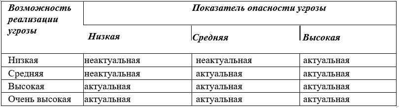

Лабораторная работа 5.
Построение модели угроз ИСПДн
Цель работы
Изучить нормативные документы ФСТЭК по построению модели угроз. Построить модель угроз информационной системы персональных данных функционирующей в Вашей организации.
Теоретическая часть
В соответствии с «Методикой определения актуальных угроз безопасности персональных данных при их обработке в информационных системах персональных данных» разработанной ФСТЭК, определение уровня исходной защищённости производится на основании анализа технических и эксплуатационных характеристик ИСПДн.
Исходный уровень защищенности определяется следующим образом:
ИСПДн имеет высокий уровень исходной защищенности, если не менее 70% характеристик ИСПДн соответствуют уровню «высокий» (суммируются положительные решения по первому столбцу, соответствующему высокому уровню защищенности), а остальные – среднему уровню защищенности (положительные решения по второму столбцу).
ИСПДн имеет средний уровень исходной защищенности, если не выполняются условия по пункту 1 и не менее 70% характеристик ИСПДн соответствуют уровню не ниже «средний» (берется отношение суммы положительные решений по второму столбцу, соответствующему среднему уровню защищенности, к общему количеству решений), а остальные – низкому уровню защищенности.
ИСПДн имеет низкую степень исходной защищенности, если не выполняются условия по пунктам 1 и 2.
При составлении перечня актуальных угроз безопасности ПДн каждой степени исходной защищенности ставится в соответствие числовой коэффициент Y 1, а именно:
– для высокой степени исходной защищенности;
– для средней степени исходной защищенности;
– для низкой степени исходной защищенности.
Определение вероятности реализации угроз безопасности в информационной системе персональных данных
Вводятся четыре вербальных градации показателя «Вероятность реализации угрозы»:
• маловероятно – отсутствуют объективные предпосылки для осуществления угрозы (например, угроза хищения носителей информации лицами, не имеющими легального доступа в помещение, где последние хранятся); низкая вероятность – объективные предпосылки для реализации
• угрозы существуют, но принятые меры существенно затрудняют ее реализацию (например, использованы соответствующие средства защиты информации);
• средняя вероятность – объективные предпосылки для реализации угрозы существуют, но принятые меры обеспечения безопасности ПДн недостаточны;
• высокая вероятность – объективные предпосылки для реализации угрозы существуют и меры по обеспечению безопасности ПДн не приняты.
Далее оценивается опасность каждой угрозы. При оценке опасности на основе опроса экспертов (специалистов в области защиты информации) определяется вербальный показатель опасности для рассматриваемой ИСПДн. Этот показатель имеет три значения:
• Низкая опасность – если реализация угрозы может привести к незначительным негативным последствиям для субъектов персональных данных;
• Средняя опасность – если реализация угрозы может привести к негативным последствиям для субъектов персональных данных;
• Высокая опасность – если реализация угрозы может привести к значительным негативным последствиям для субъектов персональных данных. Затем осуществляется выбор из общего (предварительного) перечня угроз безопасности тех, которые относятся к актуальным для данной ИСПДн, в соответствии с правилами, приведенными в таблице
